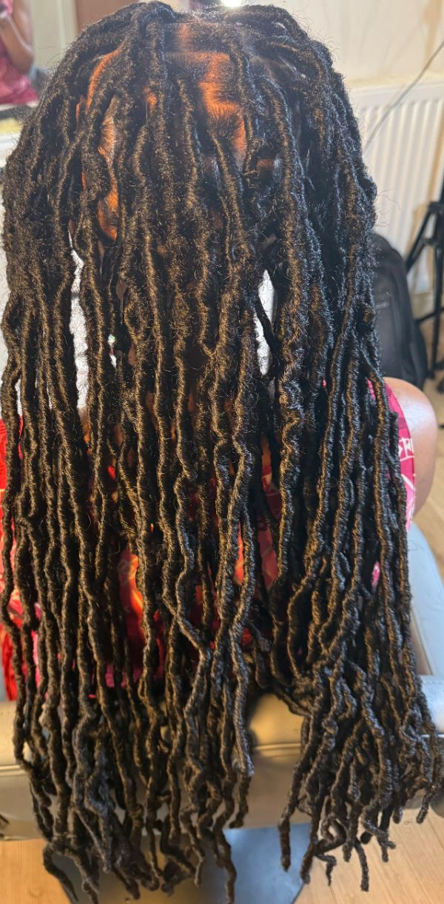
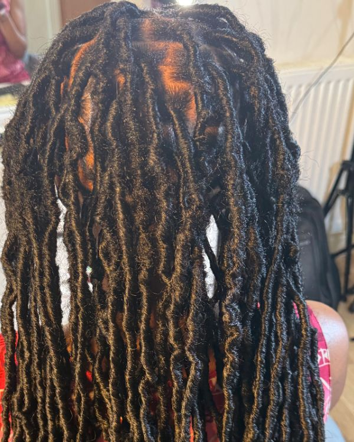

Today
Mirror, products, light stand and the chair around the locs.

Faux Locs
From £80 · 3–6 hrs
A. Full length, trimmed
Roots to ends, sides trimmed. The photo is tall and narrow, so the card shows pink space either side.

Faux Locs
From £80 · 3–6 hrs
B. Close-up that fills the cardRECOMMENDED
Fills the whole card with locs and partings; the very ends are cut off at the bottom.

Faux Locs
From £80 · 3–6 hrs